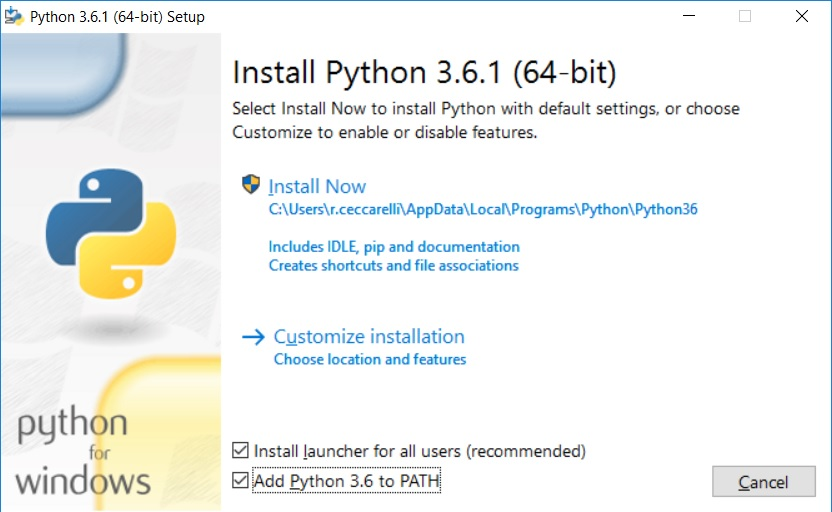

1. Il progetto¶
Per realizzare la nostra guida utilizzeremo dei tools che gestiscono un linguaggio di markup denominato ReStructuredText
Grazie a questo set di strumenti redigeremo il testo con un normalissimo editor (il notepad di
Windows può andare benissimo) e questo potrà essere trasformato in un set di pagine Web (o anche una
pagina unica se lo preferiamo), un documento Pdf, un ebook e tanti altri formati.
Darò indicazione su come installare i programmi necessari in ambiente Windows, ma gli strumenti presentati sono tutti multipiattaforma e si possono utilizzare benissimo anche su macchine Linux o Mac.
1.1. Installare il software necessario¶
Innanzitutto è necessario accertarsi che il proprio PC abbia un interprete Python, cosa comune
nelle macchine unix/linux, ma al contrario rara nelle macchine Windows
1.1.1. Python per Windows¶
Può essere scaricato dal sito python.org (scegliete l’installer appropriato per il vostro PC, non il file zip).
Lanciamo l’installer
Spuntate entrambe le caselline in basso e poi avviate l’installazione standard confermando sempre le scelte proposte.
Al termine dell’installazione apparirà questo screen:
dove consiglio di cliccare sulla voce Disable path length limit prima di terminare.
1.1.2. Sphinx-build¶
Se avete installato una versione recente di Python (come quella delle figure sopra) dovreste già trovarvi installato
pip, il gestore dei pacchetti di Python. Se così non fosse leggete qui
come fare.
Aprite il prompt dei comandi e scrivete:
pip install sphinx
Verranno scaricati ed installati alcuni pacchetti, al termine scrivete:
sphinx-build -h
che, se tutto è andato a buon fine, vi mostrerà l’help del tool.
1.1.3. MikTex¶
Il sistema di build non è in grado di generare direttamente dei file PDF, ma si appoggia ad un altro sistema di composizione dei testi chiamato LaTeX. Dovremo quindi installare un interprete per tale linguaggio: utilizzeremo MikTex.
L’installazione è banale: basta confermare tutte le opzioni proposte dall’installer.
1.2. Preparare la cartella di sviluppo¶
Siamo finalmente pronti ad iniziare il nostro progetto. Creiamo una cartella per contenerlo,
posizioniamoci al suo interno ed apriamo il prompt dei comandi. (Per chi non lo sapesse:
tenere premuto il tasto SHIFT e fare click con il tasto destro del mouse; dal menu che appare selezionare
Apri finestra di comando qui)
Nel prompt comandi scriviamo:
sphinx-quickstart
A cui seguirà il dialogo riportato di seguito
C:\guide_guide>sphinx-quickstart
Welcome to the Sphinx 1.5.3 quickstart utility.
Please enter values for the following settings (just press Enter to
accept a default value, if one is given in brackets).
Enter the root path for documentation.
> Root path for the documentation [.]:
You have two options for placing the build directory for Sphinx output.
Either, you use a directory "_build" within the root path, or you separate
"source" and "build" directories within the root path.
> Separate source and build directories (y/n) [n]:
Inside the root directory, two more directories will be created; "_templates"
for custom HTML templates and "_static" for custom stylesheets and other static
files. You can enter another prefix (such as ".") to replace the underscore.
> Name prefix for templates and static dir [_]:
The project name will occur in several places in the built documentation.
> Project name: guide_guide
> Author name(s): Roberto Ceccarelli
Sphinx has the notion of a "version" and a "release" for the
software. Each version can have multiple releases. For example, for
Python the version is something like 2.5 or 3.0, while the release is
something like 2.5.1 or 3.0a1. If you don't need this dual structure,
just set both to the same value.
> Project version []: 0.1
> Project release [0.1]:
If the documents are to be written in a language other than English,
you can select a language here by its language code. Sphinx will then
translate text that it generates into that language.
For a list of supported codes, see
http://sphinx-doc.org/config.html#confval-language.
> Project language [en]: it
The file name suffix for source files. Commonly, this is either ".txt"
or ".rst". Only files with this suffix are considered documents.
> Source file suffix [.rst]:
One document is special in that it is considered the top node of the
"contents tree", that is, it is the root of the hierarchical structure
of the documents. Normally, this is "index", but if your "index"
document is a custom template, you can also set this to another filename.
> Name of your master document (without suffix) [index]:
Sphinx can also add configuration for epub output:
> Do you want to use the epub builder (y/n) [n]: y
Please indicate if you want to use one of the following Sphinx extensions:
> autodoc: automatically insert docstrings from modules (y/n) [n]:
> doctest: automatically test code snippets in doctest blocks (y/n) [n]:
> intersphinx: link between Sphinx documentation of different projects (y/n) [n]:
> todo: write "todo" entries that can be shown or hidden on build (y/n) [n]:
> coverage: checks for documentation coverage (y/n) [n]:
> imgmath: include math, rendered as PNG or SVG images (y/n) [n]:
> mathjax: include math, rendered in the browser by MathJax (y/n) [n]:
> ifconfig: conditional inclusion of content based on config values (y/n) [n]:
> viewcode: include links to the source code of documented Python objects (y/n) [n]:
> githubpages: create .nojekyll file to publish the document on GitHub pages (y/n) [n]: y
A Makefile and a Windows command file can be generated for you so that you
only have to run e.g. `make html' instead of invoking sphinx-build
directly.
> Create Makefile? (y/n) [y]: y
> Create Windows command file? (y/n) [y]: y
Creating file .\conf.py.
Creating file .\index.rst.
Creating file .\Makefile.
Creating file .\make.bat.
Finished: An initial directory structure has been created.
You should now populate your master file .\index.rst and create other documentation
source files. Use the Makefile to build the docs, like so:
make builder
where "builder" is one of the supported builders, e.g. html, latex or linkcheck.
C:\guide_guide>
Mi sembra abbastanza semplice capire dove va inserito il vostro nome e quello del progetto; per tutto il resto potete dare le risposte dell’esempio.
Alla fine della procedura la cartella sarà popolata da alcuni files e directory: dovremo concentrare la nostra attenzione su due di loro.
1.2.1. Il file di configurazione¶
Questo file contiene tutte le impostazioni che regolano il rendering della nostra guida sulle varie piattaforme. Non lo analizzeremo tutto, ma solo le parti su cui è necessario intervenire per ottenere lo stile con cui è stata compilata questa guida.
# All configuration values have a default; values that are commented out
# serve to show the default.
import sys
import os
import shlex
# If extensions (or modules to document with autodoc) are in another directory,
# add these directories to sys.path here. If the directory is relative to the
# documentation root, use os.path.abspath to make it absolute, like shown here.
#sys.path.insert(0, os.path.abspath('.'))
Nelle opzioni generali dobbiamo controllare
# -- General configuration ------------------------------------------------
# If your documentation needs a minimal Sphinx version, state it here.
#needs_sphinx = '1.0'
# Add any Sphinx extension module names here, as strings. They can be
# extensions coming with Sphinx (named 'sphinx.ext.*') or your custom
# ones.
# Install cloud_sptheme with the following command:
# pip install cloud_sptheme
extensions = [
'sphinx.ext.autodoc',
'sphinx.ext.mathjax',
'sphinx.ext.githubpages',
]
# Add any paths that contain templates here, relative to this directory.
templates_path = ['_templates']
# The suffix(es) of source filenames.
# You can specify multiple suffix as a list of string:
# source_suffix = ['.rst', '.md']
source_suffix = '.rst'
# The encoding of source files.
#source_encoding = 'utf-8-sig'
# The master toctree document.
master_doc = 'index'
# General information about the project.
project = 'Guida per scrivere una guida'
copyright = '2017 Roberto Ceccarelli - The Strawberry Field'
author = 'Roberto Ceccarelli'
# The version info for the project you're documenting, acts as replacement for
# |version| and |release|, also used in various other places throughout the
# built documents.
#
# The short X.Y version.
version = '0.1'
# The full version, including alpha/beta/rc tags.
release = '0.1 draft'
# The language for content autogenerated by Sphinx. Refer to documentation
# for a list of supported languages.
#
# This is also used if you do content translation via gettext catalogs.
# Usually you set "language" from the command line for these cases.
language = 'it'
# There are two options for replacing |today|: either, you set today to some
# non-false value, then it is used:
#today = ''
# Else, today_fmt is used as the format for a strftime call.
today_fmt = '%d.%m.%Y'
Nella sezione HTML
# -- Options for HTML output ----------------------------------------------
# The theme to use for HTML and HTML Help pages. See the documentation for
# a list of builtin themes.
html_theme = 'sphinx_rtd_theme'
# Theme options are theme-specific and customize the look and feel of a theme
# further. For a list of options available for each theme, see the
# documentation.
#html_theme_options = {}
# Add any paths that contain custom themes here, relative to this directory.
#html_theme_path = []
# The name for this set of Sphinx documents. If None, it defaults to
# "<project> v<release> documentation".
html_title = "draft"
# A shorter title for the navigation bar. Default is the same as html_title.
#html_short_title = None
# The name of an image file (relative to this directory) to place at the top
# of the sidebar.
html_logo = 'images/logo.png'
# The name of an image file (within the static path) to use as favicon of the
# docs. This file should be a Windows icon file (.ico) being 16x16 or 32x32
# pixels large.
#html_favicon = None
# Add any paths that contain custom static files (such as style sheets) here,
# relative to this directory. They are copied after the builtin static files,
# so a file named "default.css" will overwrite the builtin "default.css".
html_static_path = ['_static']
# If true, links to the reST sources are added to the pages.
html_show_sourcelink = False
# Language to be used for generating the HTML full-text search index.
# Sphinx supports the following languages:
# 'da', 'de', 'en', 'es', 'fi', 'fr', 'h', 'it', 'ja'
# 'nl', 'no', 'pt', 'ro', 'r', 'sv', 'tr'
html_search_language = 'it'
Nella sezione LaTeX
# -- Options for LaTeX output ---------------------------------------------
latex_elements = {
'classoptions': ',openany,oneside',
'babel': '\\usepackage[italian]{babel}',
# The paper size ('letterpaper' or 'a4paper').
'papersize': 'a4paper',
# The font size ('10pt', '11pt' or '12pt').
#'pointsize': '10pt',
# Additional stuff for the LaTeX preamble.
'preamble': r'''
\usepackage[default]{lato}
\usepackage{inconsolata}
\usepackage{xmpincl}
\includexmp{license}
\hypersetup{pdftex,
pdfauthor={Roberto Ceccarelli - The Strawberry Field},
pdftitle={Guida per scrivere una Guida},
pdfsubject={Guida per scrivere una guida con ReStructuredText, Git e GitHub},
pdfkeywords={Guida, howto, manual ReStructuredText, git, GitHub}}
''',
# Latex figure (float) alignment
#'figure_align': 'htbp',
'fncychap': '\\usepackage[Bjornstrup]{fncychap}',
}
# include file for license
latex_additional_files = ['license.xmp']
# Grouping the document tree into LaTeX files. List of tuples
# (source start file, target name, title,
# author, documentclass [howto, manual, or own class]).
latex_documents = [
(master_doc, 'guide_guide.tex', 'Guida per scrivere una Guida',
'Roberto Ceccarelli', 'manual'),
]
#latex_toplevel_sectioning = 'chapter'
# The name of an image file (relative to this directory) to place at the top of
# the title page.
latex_logo = 'images/cover_image.png'
1.2.2. Il file index¶
Questo è il file che elenca tutti i file ReStructuredText che compongono la nostra guida.
Quello che segue è il file indice di questa guida che dovrete adattare per il vostro lavoro indicando (nell’ordine voluto) i file .rst che compongono la guida.
.. TSF Guide Howto master file, created by
sphinx-quickstart on Tue Dec 22 19:39:50 2015.
You can adapt this file completely to your liking, but it should at least
contain the root `toctree` directive.
Una guida per creare guide
==========================
.. toctree::
:maxdepth: 3
:numbered:
:name: mastertoc
:caption: Sommario
rest
rest-write
git
github
github-site
biblio
acknowledgements
download
legal
Fate attenzione che l’identazione è fatta da quattro spazi e non da tabulazioni (che non funzionerebbero)
Non necessariamente va utilizzato un file per capitolo, potete organizzarvi come meglio credete.
1.2.3. Il file di licenza per i PDF¶
Non strettamente necessario, ma utile per realizzare file PDF che espongano la loro licenza ai motori di ricerca.
Sul sito di creative Commons potete generarlo utilizzado questo form oppure potete modificare il file per adattarlo alla licenza che avete scelto.
Questo è il file utilizzato per questa guida:
<?xpacket begin='' id=''?>
<x:xmpmeta xmlns:x='adobe:ns:meta/'>
<rdf:RDF xmlns:rdf='http://www.w3.org/1999/02/22-rdf-syntax-ns#'>
<rdf:Description rdf:about=''
xmlns:xapRights='http://ns.adobe.com/xap/1.0/rights/'>
<xapRights:Marked>True</xapRights:Marked>
</rdf:Description>
<rdf:Description rdf:about=''
xmlns:xapRights='http://ns.adobe.com/xap/1.0/rights/'>
<xapRights:WebStatement rdf:resource='https://github.com/strawberryfield/guide_guide'/>
</rdf:Description>
<rdf:Description rdf:about=''
xmlns:xapRights='http://ns.adobe.com/xap/1.0/rights/'
>
<xapRights:UsageTerms>
<rdf:Alt>
<rdf:li xml:lang='x-default' >Quest'opera è distribuita con Licenza <a rel="license" href="http://creativecommons.org/licenses/by-nc-sa/4.0/">Creative Commons Attribuzione - Non commerciale - Condividi allo stesso modo 4.0 Internazionale</a>.</rdf:li>
<rdf:li xml:lang='it_IT' >Quest'opera è distribuita con Licenza <a rel="license" href="http://creativecommons.org/licenses/by-nc-sa/4.0/">Creative Commons Attribuzione - Non commerciale - Condividi allo stesso modo 4.0 Internazionale</a>.</rdf:li>
<rdf:li xml:lang='en' >This work is licensed under a <a rel="license" href="http://creativecommons.org/licenses/by-nc-sa/4.0/">Creative Commons Attribution-NonCommercial-ShareAlike 4.0 International License</a>.</rdf:li>
</rdf:Alt>
</xapRights:UsageTerms>
</rdf:Description>
<rdf:Description rdf:about=''
xmlns:dc='http://purl.org/dc/elements/1.1/'>
<dc:title>
<rdf:Alt>
<rdf:li xml:lang='x-default'>Guida per scrivere una guida</rdf:li>
<rdf:li xml:lang='it_IT'>Guida per scrivere una guida</rdf:li>
</rdf:Alt>
</dc:title>
</rdf:Description>
<rdf:Description rdf:about=''
xmlns:cc='http://creativecommons.org/ns#'>
<cc:license rdf:resource='http://creativecommons.org/licenses/by-nc-sa/4.0/'/>
</rdf:Description>
<rdf:Description rdf:about=''
xmlns:cc='http://creativecommons.org/ns#'>
<cc:attributionName>Roberto Ceccarelli - The Strawberry Field</cc:attributionName>
</rdf:Description>
</rdf:RDF>
</x:xmpmeta>
<?xpacket end='r'?>